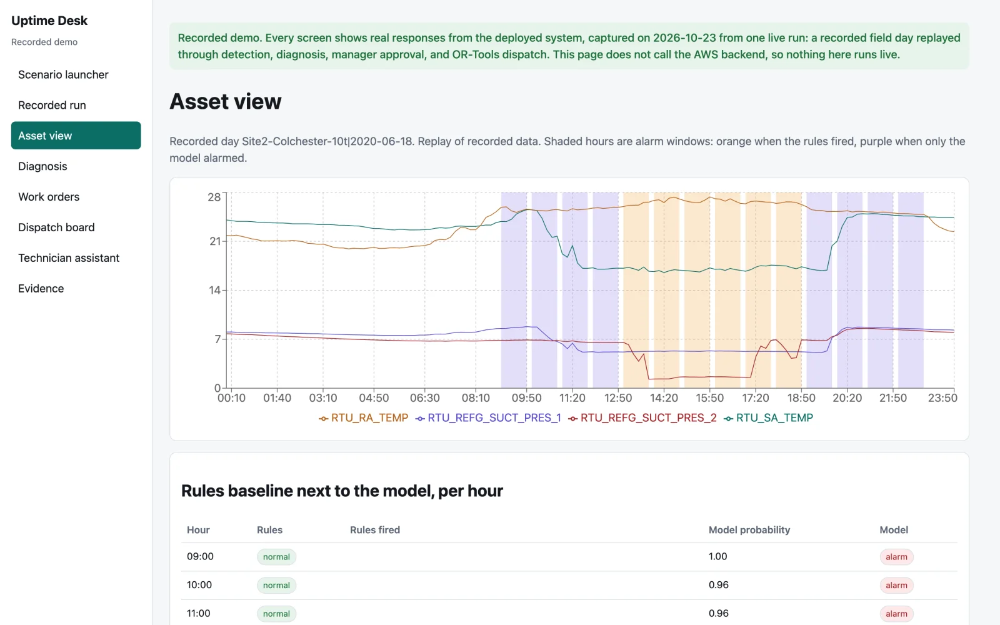
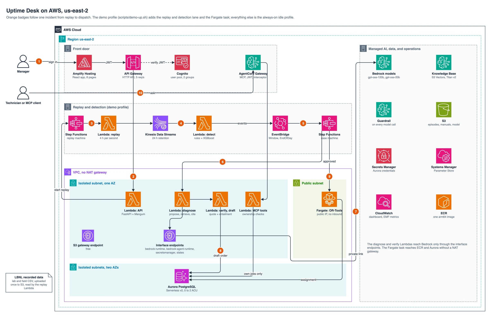

01
What failed?
A trend crosses a threshold. Someone still has to work out which component failed, and whether the equipment or the building schedule caused it.
When an air handler or rooftop unit starts to fail, Uptime Desk turns the sensor alarm into a diagnosis that quotes the equipment manual, a work order that a manager approves, and a qualified technician on the way. Code checks every quote, approval, and assignment.
The video covers the problem, the AWS design, one recorded field day replayed through the live system, and the measured results, including where the simple baseline won.
2 minutes 30 seconds, narrated, with captions. The demo footage replays recorded LBNL field data; no reading is simulated.
A building automation system can tell a service manager that a supply air temperature is drifting. It cannot answer the three questions that decide how fast the building recovers.
A trend crosses a threshold. Someone still has to work out which component failed, and whether the equipment or the building schedule caused it.
Service and lockout steps live in manufacturer PDFs that the alarm system never reads. An unsourced step on a work order is a safety risk.
The nearest technician may lack the certification, the shift, the site badge, or the escort clearance. The SLA clock keeps running while the dispatcher checks.
Models propose. Deterministic code decides. The manager stays in control of every order that reaches a technician. Each screen below comes from the recorded demo, captured from a real run.

Each gate compared the AI path against a simple baseline on recorded LBNL data. Lab and field results stay separate. Orange cards mark where the baseline won or the system stopped itself.
The rules stay the primary detector because they won on two of three equipment families. The AI's lead in naming the fault over the rule hint (0.424 against 0.326) is not statistically significant (p = 0.078). Every report is in the reports folder.
AWS CDK in TypeScript defines every resource in us-east-2. The always-on profile holds the data, identity, and API layers. The demo profile adds the streaming pipeline and the Fargate solver only when a demo runs.

Numbered badges follow one incident: sign-in, API, replay, detection, the case machine, diagnosis through private endpoints, the draft, approval and dispatch, and the technician's question. Click to enlarge.
Who uses it, and how one fault becomes one work order.
Network, identity, orchestration, retrieval, data, delivery, and operations.
Lambdas that touch Aurora reach Bedrock, Secrets Manager, and Step Functions through four interface endpoints in one Availability Zone. That trades zone resilience for about $29 a month less idle cost (AWS list price, an estimate).
The rules baseline won on two of three equipment families, so it stays the primary detector. The model runs beside it, and any disagreement goes to a person.
Work order steps carry a CHECK constraint that accepts only verified quotes. A bug in the application layer still cannot store an unsourced instruction.
An AgentCore Gateway interceptor replaces any identity the client sends with the one in the Cognito token. In the live check, a spoofed manager claim was replaced and denied.